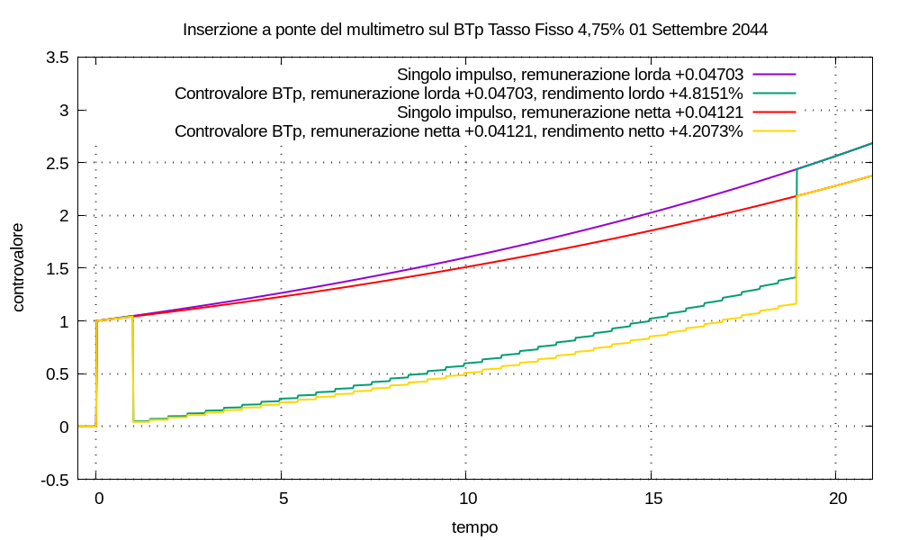

Usando l’inserzione a ponte ho calcolato i rendimenti effettivi di questo titolo a partire da venerdí 18 settembre 2026 fino al rimborso il 1 Settembre 2044, simulando un acquisto al prezzo di riferimento del giorno; non posso essere sicuro di non aver commesso errori di modellizzazione o calcolo. Il risultato è nella figura qui sotto.
La remunerazione al lordo delle tasse risulta λlordo ≈ 0,0470278 e il relativo rendimento effettivo al lordo delle tasse ηlordo ≈ 4,81512%, che si può considerare tasso interno di rendimento lordo.
La remunerazione al netto delle tasse risulta λnetto ≈ 0,0412119 e il relativo rendimento effettivo al netto delle tasse ηnetto ≈ 4,20729%, che si può considerare tasso interno di rendimento netto.
Sul sito di Borsa Italiana sono riportati i dati:
Rendimento effettivo a scadenza lordo 4,81 Rendimento effettivo a scadenza netto 4,2 Prezzo di riferimento 99,9
sia i rendimenti che il prezzo di riferimento sono da intendersi in percentuale rispetto al valore nominale d’un singolo titolo.

Seguono note sul calcolo.
U(t) = u(t) esp(λ t)
che a impulsi singoli unitari a cui è stata sommata la movimentazione per l’acquisto, detenzione e rimborso del titolo:
V(t) = U(t) + Σk Ck u(t - tk) esp[λ (t - tk)]
Ho fatto corrispondere il tempo t1 = 1 all’istante di inizio studio del titolo, cioè il 18 settembre 2026 alle ore 00:00, simulando un acquisto in quell’istante.
(0,0475 ÷ 2) × (1 - 17 ÷ (360 ÷ 2)) ≈ 0,0215069